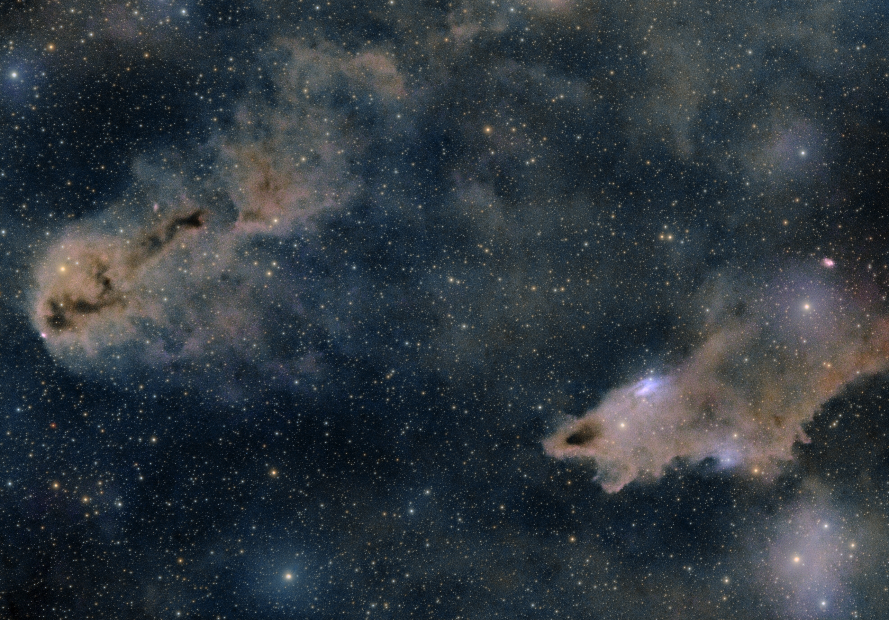

会則
天文サークル ポーラスター
第1条（名称）
本団体は、「天文サークル ポーラスター」（以下「本会」という。）と称する。
第2条（目的・活動）
本会は、天文に関する活動を通じて、会員相互の交流と親睦を深めることを目的とし、その目的を達成するため、天体観測会、交流会その他目的に沿った活動を行う。
第3条（入会資格）
本会に入会できる者は、次の各号の条件をすべて満たす者とする。
- 入会時点で満18歳以上30歳以下であり、高校生でないこと。
- 本会の運営に著しい支障を及ぼすおそれがないこと。
第4条（入会及び退会）
- 本会への入会を希望する者は、所定の方法により入会を申し込み、代表者の承認を得るものとする。
- 本会は、入会を承認した者に対し、会員番号を付与し、会員名簿に登録する。
- 会員は、代表者に退会の意思を申し出ることにより、任意に退会することができる。
- 退会した者が再入会を希望する場合は、改めて入会手続きを行うものとする。
第5条（役員及び運営）
- 本会に代表1名及び副代表1名を置く。
- 代表は、本会を代表し、運営に関する最終的な決定権を有する。
- 副代表は、代表を補佐し、代表が不在の場合はその職務を代行する。
- 副代表の任期は1年とし、再任を妨げない。
- 副代表は、代表が会員の中から指名する。
- 代表は、必要に応じて副代表を解任することができる。
第6条（会費及び会計）
- 本会の入会金及び年会費は無料とする。
- 本会は、活動に必要な経費を賄うため、イベントごとに参加費を徴収することができる。
- 参加費の金額及び徴収方法は、イベントごとに代表が定め、参加者に事前に通知する。
- 本会の資金及び備品は、代表又は代表が指定する役員が管理する。
- 本会の資金及び財産は、本会の目的に沿って使用する。
- 本会は、会計の収支を記録し、適切に管理する。
第7条（禁止行為）
会員は、本会の活動及び会員相互の交流において、次の各号に掲げる行為をしてはならない。
- 他の会員に対する暴力、暴言、脅迫、嫌がらせ、いじめその他のハラスメント行為。
- 他の会員の意思を尊重せず、交際、連絡、面会その他の交流を執拗に要求する行為。
- 他の会員に対する宗教団体、政治団体、マルチ商法その他の営利活動への執拗な勧誘、又は本会の活動を利用した無断の勧誘行為。
- 他の会員の個人情報、写真、会話内容等を、本人の同意なく第三者に公開又は提供し、プライバシーを侵害する行為。
- 他の会員に対する金銭の貸借の強要、詐欺その他の金銭トラブルを引き起こす行為。
- 本会の活動中における危険行為、過度の飲酒、飲酒運転その他の安全を脅かす行為。
- 本会又は他の会員の名誉若しくは信用を不当に毀損する行為。
- 本会の運営を故意に妨害し、又は活動の円滑な実施を著しく妨げる行為。
- 法令又は公序良俗に反する行為。
- その他、本会の運営が不適切と判断する行為。
第8条（会員資格の停止及び除名）
- 代表は、会員が本会の会則に違反した場合、又は本会の運営若しくは会員相互の交流に不適切であると合理的に判断した場合、当該会員の活動参加を停止し、又は除名することができる。
- 前項の処分は、代表が決定する。
第9条（個人情報の取り扱い）
- 本会は、入会時に取得した会員の個人情報を、入会資格の確認、会員名簿の管理及び活動に関する連絡のために利用する。
- 本会は、取得した個人情報を適切に管理し、法令に基づく場合又は本人の同意がある場合を除き、第三者に提供しない。
- 会員の個人情報は、代表又は代表が指定する役員が管理する。
- 会員が退会した場合、その個人情報は、法令上の保存義務その他正当な理由がある場合を除き、速やかに削除する。
第10条（会則の改正）
- 本会の会則は、代表の決定により改正することができる。
- 代表は、会則を改正した場合、速やかに会員に周知するものとする。
第11条（解散）
- 本会は、代表の決定により解散することができる。
- 代表は、本会の解散を決定した場合、速やかに会員に通知するものとする。
- 解散時に残存する資金及び財産の処分方法は、代表が決定する。
附則（施行日）
本会則は、2026年11月10日から施行する。